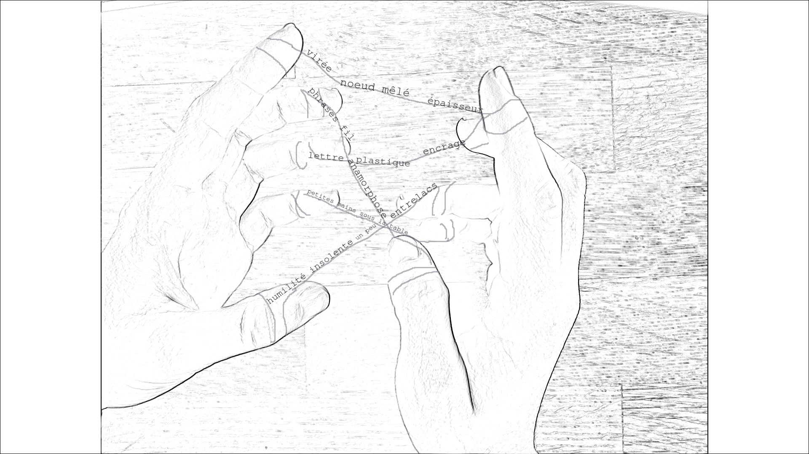

Commencement
Cette thèse n’est pas une solution.

Cette thèse ne représente ni une solution absolue ni une solution partielle qui viendrait répondre à la problématique soulevée, dont elle a créé peut-être certaines des pièces.
Elle n’est pas sa propre solution – probablement un monstre fabriqué avec ses regrets – non pas qu’elle refuserait cet élogieux statut scientifique, mais parce qu’elle ne s’extrait pas elle-même du nœud autour duquel elle fait graviter ses mots.
Les pages qui suivront sont une occasion de gravitation autour de plusieurs questions constellées qui, en vague renversée, interrogent l’écriture, le geste d’inscription, mais aussi la nature même de l’objet scientifique produit.
S’il fallait déterminer – sous la contrainte d’un utilitarisme et la pression de conventions – l’originalité de cette thèse1, il pourrait être répondu que la patte pâte qui lui est propre est de mêler une humilité de la tâche et une insolence de la démarche, caractéristique double qui émane pour une large part de l’éthos des mains qui écrivent. Équilibre sur le fil qui conduit à explorer un modèle de discours qui se défait du principe d’individualité, de génie, de solitude, de scientificité et même de créativité pour un travail pourtant estampillé « recherche-création » et qui demeure signé par une unique personne.
cette thèse jouera le jeu
aura des discours construits
ne sera pas cosignée
respectera les marges et conventions de mises en page
...
mais trichera un peu
traitera de ses brouillons et de ses échecs
reconnaîtra la nature collective de ses idées
aura peut-être bricolé le format final de dépôt
C’est dans ce même caprice des repères scientifiques et une saveur toute particulière du manifeste littéraire que se pose le refus de distinguer ces deux objets que seraient la recherche d’un côté et la création de l’autre. Apportant chacune un patrimoine (la recherche et sa rigueur d’analyse, la création et sa folie sensible), elles ne seront pas abordées ensemble comme un heureux mariage dont le contrat lèse une des parties. Il n’y aura pas deux produits, aussi poreuse soit rendue la cloison les séparant par un principe de dialogue ou de complémentarité. Il y aura un seul et même objet.
ton essayistique à l'essai
textes perturbateurs en échappée de la marge
déploiement des coulisses en lisse
piquement du timbre argumentaire par des images intempestives
Cette thèse n’est pas une recherche-création ni une recherche et création.
La philosophie du faire sur laquelle se fonde cette approche de l’écriture ici même peut être résumée par la formule « thinking through making ». Proposée par l’anthropologue britannique Ingold, l’expression ne suffit pourtant pas à traduire un régime d’écriture qui ne peut être synthétisé comme simplement l’association de deux types d’actions. Il ne s’agit pas pour une approche classique, scientifique d’être agrémentée par une approche créatrice, marginale ; il ne s’agit pas pour la création, tel un corps imparfait, d’être complétée dans ce qu’il lui manquerait de légitimité savante ou de mode d’emploi par la recherche. Le modèle du Thinking through making est une première entrée dans le refus d’un modèle conventionnel, celui du Making through thinking qui place la pratique à la suite de la théorie et où « theory leads and practice follows » ( Citation: N.A., 2013 (N.A.). (2013). Ingold – Thinking through Making. Retrieved from https://www.youtube.com/watch?v=Ygne72-4zyo ) . Changement de régime, le savoir n’est plus une projection – celle d’une forme pour informer une matière informe – mais ce qui émerge par le faire. La porte est donc ouverte, nous pouvons sortir d’un schéma qui rejoue le jaillissement de la merveille dans la glaise ou l’argile. Cependant, nous ne sortons pas du principe de transfert, la pensée au travers de la matière, et ainsi d’un régime de sublimation entre deux états (l’un terrien, ancré, l’autre extrait, élevé).
Le refus de la distinction entre recherche et création, la production d’une hydre de thèse, a déjà des beaux précédents2. Si peu de modèles existent pour les thèses recherche-création classiques, il n’en existe pas pour une thèse recherche-création sans bipolarité. Dans l’exploration d’une méthodologie propre, qui ne porte pas de nom par l’insuffisance des terminologies actuelles, la thèse ici s’ancre s’encre et croit croît dans l’idée de la composition des rapports : il n’y a pas « penser » et « faire », quel que soit le sens de traverse donné à ces deux balises, il y a une seule et même texture, pâte épaisse dans laquelle nous manœuvrons et sommes manœuvrés.
Cette thèse est une composition des rapports.
C’est pour cette raison que l’hypothèse de recherche avancée ne sera pas seulement l’objet d’une déclaration, un fil déroulé à la mesure d’une pelote savante et documentée, mais d’une implémentation, lacs d’expérimentations et d’explorations mêlées.
Une composition des rapports #
La notion de composition des rapports se fonde de manière directe sur bien des recherches, notamment l’agentivité de Latour ( Citation: 2014 Latour, B. (2014). Agency at the Time of the Anthropocene. New Literary History, 45(1). 1–18. Retrieved from https://www.jstor.org/stable/24542578 ) , le making de Ingold ( Citation: 2013 Ingold, T. (2013). Making: Anthropology, Archaeology, Art and Architecture. Routledge. ) , l’intra-action ou entanglement de Barad ( Citation: 2007 Barad, K. (2007). Meeting the Universe Halfway: Quantum Physics and the Entanglement of Matter and Meaning. Duke University Press. ) dont la pensée philosophico-physique surpasse certainement les hommes précédents, et se noue principalement autour de la question du sens ou de la matière : le sens et la matière sont-ils différenciables, néanmoins inéluctablement liés tels deux inséparables ? ou sont-ils une seule et même chose que les discours scindent en deux productions langagières ? Dans les deux approches, le problème est celui de la théorisation du monde, lié à un héritage dualiste platonicien et à une rhétorique immatérielle ( Citation: Vitali-Rosati, 2024 Vitali-Rosati, M. (2024). Éloge du bug (Zone). La Découverte. ) qui distingue trop radicalement les deux bords du fleuve en instaurant un système hiérarchique : la noble pensée, pure, évanescente et humaine, qui impose, comme l’ordre divin avant elle, une forme et un sens ontologique à un corps concret, passif, brut ou épais3.
De cette perspective, les études littéraires héritent dans l’approche classique de l’écriture et des textes et ce legs cristallise une tension nouée entre le fait littéraire, entendu comme le réel de la littérature, et son contexte d’inscription, l’encrage de l’écriture. Depuis les réflexions de Leroi-Gourhan ( Citation: 2014 Leroi-Gourhan, A. (2014). Le geste et la parole. [I], Technique et langage. Albin Michel. ) , Chartier ( Citation: 1997 Chartier, R. (1997). Culture écrite et société : l’ordre des livres (XIVe - XVIIIe siècle). Albin Michel. ) ou Christin ( Citation: 1995 Christin, A. (1995). L’image écrite, ou, La déraison graphique. Flammarion. ) , un tracé n’est rien sans le support sur lequel il s’inscrit et ne peut se définir en tant que signe qu’en relation avec lui.
Si l’écriture est un index indice culturel, la matérialité des environnements d’inscription est le doigt qui indique.
Qu’il soit nommé média, environnement, espace, support, conjonctures, matérialité, le réel du fait littéraire se décline en une multitude d’agencements : cela peut aller de la nouvelle architecture de l’information qu’implémente le modèle du Codex, en passant par la plume que Flaubert taillait comme processus rituel de création, par Nietzsche aveugle en devenir qui fut l’un des premiers à utiliser une machine à écrire qu’il appela « sa délicate » – si délicate que cette machine se cassa et que Nietzsche dû se rabattre sur une série de secrétaires, jusqu’à l’ambiguïté des termes computer et typewriter qui peuvent autant désigner les femmes qui utilisaient des machines spécifiques que les machines en elles-mêmes.
autant de matières et de rapports à ses incidences
il s'agit moins de les lister
que d'esquisser une méthode pour les atteindre
Fil conducteur entre des anecdotes qui nourrissent plus généralement une culture littéraire, la détermination crue du fait littéraire est telle que l’on peut se demander si elle connaît une limite
où arrêter l'excavation des matérialités de l'inscription ?
et si, en tant que telle, elle n’invalide pas la distinction même faite entre écriture et environnement
quels impacts a cette distinction sur nos schémas d'analyse de la littérature ?
quelles postures vis-à-vis du texte impose-t-elle ?
Soit,
où achopper le chenal du geste d'inscription dans les réalités culturelles ?
Le projet d’étude qui se déploie ligne par ligne s’enracine d’abord dans l’identification de trois paradigmes du fait littéraire qui, comme des jougs autour des doigts, figent à un endroit la pensée de l’écriture et de son geste. De ces trois moines, l’écriture va d’abord effiler les crans.
La fileuse #
Le soi est toujours une vaste contrat.
S’affichant sur les écrans de leurs machines, lovée dans leurs articulations cagneuses et émergeant des taches d’encre versées de dépit, une même question qui hante les couleurs des lieux de savoirs.
À moitié murmurée, à moitié avalée,
Qui écrit ? τίς ?
Est-ce-nous qui [...] ?
Qui [...] et d'où [...] ?
En ombre partagée des études, l’interrogative – sinon éternelle du moins récurrente – traduit autant une curiosité génésiaque qu’un souci égocentré : l’humain est-il au centre de sa création, ou est-il le produit de cette dernière ? Dans quel sens transite le pouvoir de dire, de défiler définir le monde ? En somme, qui produit qui ?
Sursaut sensiblement redondant de la dialectique hégélienne du maître et de l’esclave, ranimée sous les nouvelles modalités du numérique, la réflexion sur l’origine et l’attribution de la propriété rejoint des enjeux politiques attachés non seulement à penser la question du pouvoir – ou de sa passation lorsqu’un intermédiaire se retrouve au centre d’un système de production auparavant autonome – mais également à considérer les éléments qui, techniquement, matériellement et même symboliquement, viennent déterminer une production en deçà et au-delà de ce qu’avait prévu un éventuel créateur. L’auteur – avec toute l’idéalité que l’on peut apposer à ce statut et la retenue volontaire de l’inclusif qui demeure en marge – est à bien des égards une fonction de son environnement média-technique ( Citation: Kittler, 1990 Kittler, F. (1990). Discourse Networks 1800/1900. Stanford University Press. ) , comprenant dans l’équation l’environnement qui produit son écriture. Or, au-delà de cette figure, c’est toute la définition d’une humanité et d’un humanisme qui se fait en fonction d’environnements d’écriture.
Les auteurs n’écrivent pas des livres […]. ( Citation: Chartier, 1997, p. 140 Chartier, R. (1997). Culture écrite et société : l’ordre des livres (XIVe - XVIIIe siècle). Albin Michel. )
Par cette même inquiétude liées, les théories littéraires et les théories des médias seront ici réunies pour enquêter sur ce qui produit un texte au-delà de son créateur d’abord, mais également en deçà des individus intervenants (éditeurs/éditrices4, relecteurs/relectrices entre autres). Les théories des médias, par leur angle d’étude, se consacrent aux phénomènes de production, de structuration et de diffusion culturelle par l’étude de cet étrange objet qu’est le média, alors considéré tantôt participant, tantôt agent, du moins actif. Inspirée par cette approche largement interdisciplinaire – liant, selon diverses recettes, communication, archéologie, sémiotique, bibliothéconomie, histoire –, la recherche littéraire se fond en une veille sur les environnements d’écriture et sur leur rôle dans la création. Le sujet de l’auteur (qui écrit ?) sera indirectement posé au travers et au profit de celui de son environnement technique (qu’est-ce-qui écrit ?). Dans la perspective de Kittler, théoricien des médias, l’auteur est une fonction de son environnement média-technique ( Citation: 1993 Kittler, F. (1993). Draculas Vermächtnis: technische Schriften (1. Aufl). Reclam. ) . Remarquant des changements majeurs de cet environnement en 1900 – environnement désormais façonné par le son (avec l’apparition du phonographe qui enregistre ce que l’écriture ne parvenait pas à dire), par l’imaginaire hors cadre (avec le cinéma dont les images agissent directement sur le système nerveux) et par une accélération de l’écriture (incarnée par la machine à écrire) – Kittler a également pressenti l’impact culturel des objets et des outils numériques. Lieux qui cristallisent les principales facettes de la société (identités, cultures, professions), les environnements numériques sont les espaces du tout écrit. La question qui animait Kittler en 1990 recouvre alors un nouvel éclat : « Si tout s’écrit, que faut-il lire et comment ? » ( Citation: Guez & Vargoz, 2017 Guez, E. & Vargoz, F. (2017). La mort de l’auteur selon Friedrich Kittler. Appareil(19). https://doi.org/10.4000/appareil.2561 ) . Ce qui a été formulé étroitement comme la « mort de l’auteur » par Barthes ( Citation: 1968 Barthes, R. (1968). La mort de l’auteur. Manteia(5). ) et Foucault ( Citation: 1969 Foucault, M. (1969). Qu’est ce qu’un auteur ?. Bulletin de la Société française de philosophie, 63(3). 73–104. ) se traduit chez Kittler par un changement de paradigme culturel de l’écriture, perspective d’étude qui présente plus d’ampleur et de souffle en se concentrant tout de même sur le système d’inscription de 1800. Le changement opéré entre 1800 et 1900 ne peut se résumer pour le chercheur à une simple innovation bornée, une évolution dont les échos se limiteraient à la seule rédaction, puisqu’il impacte autant les dynamiques institutionnelles d’enseignement et d’apprentissage que les méthodes de stockage et de traitement des données ( Citation: Kittler, 1985 Kittler, F. (1985). Aufschreibesysteme 1800/1900 (3., vollst. überarb. Neuaufl). Fink. ) . Pour la littérature, cela signifie, comme le rappellent Guez et Vargoz dans leur lecture de Kittler, que le « monde d’idées universelles est le fondement et l’horizon de la littérature et de la lecture » ( Citation: 2017 Guez, E. & Vargoz, F. (2017). La mort de l’auteur selon Friedrich Kittler. Appareil(19). https://doi.org/10.4000/appareil.2561 ) . La refactorisation de l’écriture, si elle signe la mort de l’auteur en tant que pure intentionnalité sur sa production, est à l’origine d’un changement de ce que signifie concrètement être auteur aujourd’hui et en quoi consiste le travail d’écriture.
En réalité, les média techniques ne tuent pas l’auteur, ils en font émerger une autre occurrence. ( Citation: Guez & Vargoz, 2017 Guez, E. & Vargoz, F. (2017). La mort de l’auteur selon Friedrich Kittler. Appareil(19). https://doi.org/10.4000/appareil.2561 )
À l’instar du projet de Kittler, il s’agit de procéder à une décomposition média-technique du discours sans en faire le cas d’une individualité. Détrôner l’auteur ne signifie pas que la perspective humaniste à l’origine de la recherche est abandonnée aux limbes : étudier les réalités du texte avec une démarche de recherche et création s’inscrit dans une quête, narrative et métatextuelle, de notre adresse à l’écriture. Quel est notre lieu, à nous humains, dans la machine littéraire ? Où se trouvent nos points d’expression et de pression sur des rouages qui impliquent non seulement une réflexion technique, mais également un engagement politique et éthique ? Quels sont les compromis que nous acceptons (peut-être sans autre moyen de refus, peut-être sans conscience éclairée) dans le contrat d’écriture passé avec notre environnement d’inscription ?
Parmi les oublis, les fautes,
les failles d'une organisation qui oublie parfois de noter ses sources,
suis-je toujours à l'origine des mots, des manques,
des idées et images que mes doigts encrent ?
La répartitrice #
Le transport est source d’angoisse.
se déplacer d'un point A à un point B
et comment traverser le ? entre les deux points
que va nous faire ? dans le passage
A ? B et moi qui ne suis plus sûre de mes lettres
Dans les transitions d’un support à un autre, d’un système médiatique à un autre, les consciences de l’écriture ont toujours craint la perte, l’oubli, l’altération, l’oxydation d’un fait littéraire en tant que porte-voix d’un discours, mais aussi en tant que communauté de pratiques et de traditions.
Le livre est créature fragile, il souffre de l’usure du temps, craint les rongeurs, les intempéries, les mains inhabiles. Si pendant cent et cent ans tout un chacun avait pu librement toucher nos manuscrits, la plus grande partie d’entre eux n’existerait plus. Le bibliothécaire les défend donc non seulement des hommes mais aussi de la nature, et consacre sa vie à cette guerre contre les forces de l’oubli, ennemi de la vérité. ( Citation: Eco, 2022 Eco, U. (2022). Le nom de la rose (Nouvelle éd. augmentée des dessins et notes préparatoires de l'auteur). Bernard Grasset. )
Toutes teintées d’angoisses aux saveurs platoniciennes, réactionnaires ou conservatrices, les craintes des transports sont un indice que la culture littéraire est dépositaire, dans ses discours et ses pratiques, d’une incarnation au sein de systèmes concrets. Impliquant configurations, agencements, dispositions, les lieux d’enregistrement rassemblent les caractéristiques physiques et culturelles dont ni les horizons de légitimité et de mémoire ni les idéaux de pérennité et de superbe ne peuvent s’extraire.
[L’] histoire [de l’écriture] est étroitement liée à celle de ses supports, sa mémoire absolument dépendante de ces témoins d’argile, de pierre, de brique d’os, de bois, de papyrus ou de parchemin sans lesquels les messages écrits seraient à tout jamais perdus. ( Citation: Zali, Berthier & al., 1997, p. 12 Zali, A., Berthier, A. & Bibliothèque nationale de France (1997). L’aventure des écritures. Naissances. Bibliothèque nationale de France. )
Il y a autant de changements de paradigme que de méfiances exprimées avançant de main en main : de la culture de l’écrit signant la fin de toute compréhension (prendre en soi ou mémorisation) des idées, en passant par la démocratisation du livre de poche qui donne à lire Sartre à des individus qui n’avaient pas « demandé à lire » (au sens où ils n’en ont pas le statut
(
Citation: N.A., 1964
(N.A.).
(1964).
Le livre de poche et le mépris.
Retrieved from
https://www.ina.fr/ina-eclaire-actu/video/i13043985/le-livre-de-poche-et-le-mepris
)
), jusqu’à la littérature numérique qui donne le statut d’auteur à des robots et donne la possibilité à tous et toutes de publier, il s’agit au fond d’un même cycle se répétant dans le vide. Soucis de l’hybris, l’inquiétude du changement de paradigme culturel de l’écriture, et par là du geste d’inscription autant que des modèles de la littérature, peut autant raisonner résonner comme les alarmes d’une perte de maîtrise sur la production écrite, partie au XVe siècle apprendre la mécanique avec Gutenberg et courir le réseau à partir des années 1990, qu’apparaître comme les marqueurs de nos propres méconnaissances des environnements culturels.
Dans son analyse de l’évolution de l’écriture au travers des supports, Chartier, historien du livre, de l’édition et de la lecture, reprend justement la mesure de la productivité en citant Utopie d’un homme qui est fatigué de Borges ( Citation: 2018 Borges, J. (2018). Le livre de sable (Nouvelle éd). Gallimard. ) et particulièrement le dialogue entre Eudoro Acevedo et l’homme sans nom ( Citation: Chartier, 2006 Chartier, R. (2006). L’écrit sur l’écran. Ordre du discours, ordre des livres et manières de lire. Entreprises et histoire, 43(2). 15. https://doi.org/10.3917/eh.043.0015 ) . Dans cette nouvelle, la perception du voyageur dans le futur Eudoro, dont le monde d’origine comporte plus de deux mille livres, est confrontée à celle d’un homme des temps de l’avenir, dont le monde a banni l’imprimerie.
L’imprimerie maintenant abolie, a été l’un des pires fléaux de l’humanité, car elle a tendu à multiplier jusqu’au vertige des textes tout à fait inutile. ( Citation: 2018 Borges, J. (2018). Le livre de sable (Nouvelle éd). Gallimard. )
L’angoisse de l’inutilité, émergeant de l’accroissement rapide d’une production culturelle, n’est pas tant liée à une perspective élitiste d’un art, qu’à un souci de repère et de lisibilité de ce qui ne cesse d’alimenter ce même art. Qualifiée de « barbarie textuelle » ( Citation: Baillet, 1722 Baillet, A. (1722). Jugemens des savans sur les principaux ouvrages des auteurs. C. Moette. Retrieved from https://gallica.bnf.fr/ark:/12148/bpt6k113883m ) , la multiplication des supports d’inscription et des systèmes de diffusion n’est pas épargnée par le paradoxe humain : crainte par une société qui, elle-même, exprime l’inquiétude de la transmission matérielle de ses traditions, valeurs et idées. La résistance à la multiplication et à une répartition des supports de mémoire est à lire entre les lignes des enjeux de légitimité, de lecture, d’expertise et d’appréciation du discours.
Déni d’une angoisse ou fausse joie d’avoir trouvé la solution à la peur du périssable, les flux numériques représentaient (et font écran encore de cette manière) la possibilité pour le fait littéraire de parvenir enfin à s’extraire de la boue, une porte pour échapper à la pesanteur du monde et défier la mort. Or, toujours dans le paradoxe de systèmes qui ne pourront jamais satisfaire les inquiétudes même s’ils semblent apporter sur le papier la réponse à un problème, le texte est alors aussi impalpable que diaboliquement vaporeux :
À l’ère de la dématérialisation des échanges où, avec le réseau Internet, le texte est devenu une pure configuration immatérielle. ( Citation: Klock-Fontanille, 2010 Klock-Fontanille, I. (2010). Des supports pour écrire d’Uruk à Internet. Le français aujourd'hui, 170(3). 13–30. https://doi.org/10.3917/lfa.170.0013 )
La culture numérique, sorcière technocrate, semble résoudre certains maux, mais, ce faisant, ne respecte pas les conventions établies des précédents supports.
noyons-la dans l'imaginaire de la vague
pour voir si elle flotte
Le texte numérique, devenu aussi immatériel qu’un mur, fait désormais appel, par une architecture réticulaire d’environnements eux-mêmes composés d’écriture, à une culture de l’écrit qui est également une culture de l’écran, mais surtout une culture de la méta-écriture. L’écriture électrique ( Citation: Chartier, 2006 Chartier, R. (2006). L’écrit sur l’écran. Ordre du discours, ordre des livres et manières de lire. Entreprises et histoire, 43(2). 15. https://doi.org/10.3917/eh.043.0015 ) ou numérique (terme préféré depuis quelques années dans les études) est une autre des grandes ruptures vis-à-vis de l’ordre des discours – soit l’ordre établi à partir de la relation entre des objets, des catégories et des usages textuels délimités par la littérature (lettre, livre, journal, revue, affiche, etc.). Remise en question du libro unitario, la loi de l’écriture est celle des versions. Expression héritée d’Armando Petrucci, le libro unitario a incarné une rupture au XIVe et XVe siècles en rassemblant dans une même peau les œuvres d’un auteur ou une seule œuvre. Le livre devient alors le lieu « où se noue le lien entre l’objet matériel, l’œuvre (au sens d’une œuvre particulière ou d’une série d’œuvres) et l’auteur » ( Citation: Chartier, 2006 Chartier, R. (2006). L’écrit sur l’écran. Ordre du discours, ordre des livres et manières de lire. Entreprises et histoire, 43(2). 15. https://doi.org/10.3917/eh.043.0015 ) . Si le livre en tant que modèle et format est déjà en tant que tel renégocié et remodelé par la culture numérique (des livres numériques ou livrels du début des années 2000 jusqu’aux ouvrages dits « nativement numériques »), le principe même d’objet littéraire est déplacé : non pas dans les nimbes immatériels, mais dans un système de déliaisons multiples entre les types de supports (support d’enregistrement, de diffusion, de lecture). L’écran d’affichage est un dispositif de lecture qui n’est pas directement l’objet matériel d’enregistrement de l’écriture. Non seulement les outils d’écriture (traitements ou éditeurs de textes) ne sont pas (ou très rarement) les outils de diffusion ou les environnements qui vont permettent la lecture, mais il y a une distinction désormais claire et fondamentale entre le lieu de l’enregistrement et le lieu d’accès. La question émerge alors : où est physiquement l’écriture ? où a-t-elle été transportée ? est-elle prise dans un mouvement perpétuel sur lequel nos angoisses littéraires ne peuvent pas se poser ?
L’inflexible #
ça s'allume dans la page,
la surface chauffe comme un moteur,
peut-être des harmonies sont entendues
entre tapotements, clics et notifs,
ça donne l'allure de lettres,
pas comme on les écrirait soi
ou comme on les apprend à l'école,
mais comme on peut les lire imprimées
toutes les mêmes
Autre nuage brouillant les certitudes littéraires, rappelant les angoisses platoniciennes d’un changement de support signant la déchéance d’une culture et de la tradition de ses pratiques, la question de la survivance même de l’écriture humaine émerge avec toujours plus de force depuis le passage industriel du XIXe siècle. Les médias techniques impactant le paysage culturel occidental au début des années 1900 offrent une déstabilisation suffisante aux systèmes d’inscription. Ce n’est pas seulement la résistance d’une tradition de l’imprimé (et d’une activité de la lecture papier) qui est ébranlée, mais l’ensemble d’une culture de l’écrite qui se convulse avec l’arrivée de machines modélisantes qui, paradoxalement, sont destinées principalement à inscrire et enregistrer tout le réel, y compris ce qui échappe aux perceptions humaines.
Wie wir alle wissen und nur nicht sagen, schreibt kein Mensch mehr. ( Citation: Kittler, 1993 Kittler, F. (1993). Draculas Vermächtnis: technische Schriften (1. Aufl). Reclam. )
Comme nous le savons tous, même si nous ne voulons pas nous l’avouer, aucun être humain n’écrit plus. ( Citation: Kittler, 2015, p. 30 Kittler, F. (2015). Mode protégé. les Presses du réel Labex Arts-H2H. )
Dans Mode protégé ( Citation: 2015 Kittler, F. (2015). Mode protégé. les Presses du réel Labex Arts-H2H. ) , livre réunissant les deux conférences « Le logiciel n’existe pas » (1991) et « Mode protégé » (1993), Kittler expose le fonctionnement de l’écriture numérique, non plus en termes de niveaux d’écriture qui sont le conte d’une conception théorique du numérique, mais en termes de modèles techniques.
Provocation ouvrant les développements techniques de la rédaction et de l’enregistrement, la déclaration de Kittler implique de prendre conscience d’un nouveau paradigme de l’écriture dû à un impactant changement culturel ayant eu lieu entre 1800 et 1900 (sujet de son ouvrage Discourse Network), et de saisir dans toutes leurs densités les modes d’une non-écriture dont nous héritons aujourd’hui dans nos approches et nos pratiques. La question n’est donc plus de savoir si nous écrivons encore avec les mêmes modalités que la tradition imprimée – cette hypothèse est évacuée par le chercheur allemand – mais de comprendre comment nous n’écrivons plus. L’assertion de Kittler, dans le contexte de son énonciation, fait référence aux programmes informatiques, faisant de l’écriture humaine une « inscription électrique gravée dans le silicium de nos ordinateurs, c’est-à-dire un différentiel électrique » ( Citation: Guez & Vargoz, 2017 Guez, E. & Vargoz, F. (2017). La mort de l’auteur selon Friedrich Kittler. Appareil(19). https://doi.org/10.4000/appareil.2561 ) . Dans une réflexion dédiée à l’étude des modes d’enregistrement (ou mémorisation) des savoirs et objets culturels au travers de technologies (telles que le gramophone, le film ou la machine à écrire), il affirme l’obsolescence d’un statut d’auteur au sens d’écrivant.
Si nous n’écrivons plus, c’est parce que les médias techniques, à partir du XIXe siècle, ont pu capter du réel des données qui échappent à la perception humaine : le gramophone enregistrait des oscillations non perceptibles à l’oreille humaine, la machine à écrire, augmentant la vitesse d’écriture, permettait d’automatiser le geste d’écriture et d’extorquer à ce qui était devenue une machine humaine ce que la lente écriture manuscrite ne pouvait lui soutirer, les circuits intégrés de l’ordinateur traitent les données plus rapidement que n’importe lequel ou laquelle des calculateurs et calculatrices humains employés jusqu’à la fin de la Seconde Guerre mondiale. ( Citation: Guez & Vargoz, 2017 Guez, E. & Vargoz, F. (2017). La mort de l’auteur selon Friedrich Kittler. Appareil(19). https://doi.org/10.4000/appareil.2561 )
En revanche, et c’est ce qui constitue pour une grande part la dimension d’enquête historiographique de Kittler, pour comprendre comment nous n’écrivons plus, il est primordial de s’intéresser à la manière dont les médias techniques, développés à la fin du XIXe siècle et au XXe siècle ont affecté, dans sa nature même, le médium qu’ils concurrençaient : l’écriture imprimée. Évitant donc la pente du pessimisme technique, Kittler déplace la question des sciences humaines, centrée autour de la production de l’individu, pour l’inscrire dans une fouille de la dépossession ou de la déprise de l’individu dans ses mêmes modes de production qu’il pensait seulement utiliser pour sa propre expression. Cette perspective, si elle est citée au seuil de notre propre désécriture, ouvre de nouvelles portes à l’écriture. Si nous n’écrivons plus, qu’est-ce qui écrit en notre nom ? et comment désécrire, soit assumer une non-écriture pour la structurer dans un réseau de discours avec notre environnement technique de production ?
le mot est dit
désécriture
L’exorcisme comme programme #
poursuivre la chasse aux fantômes de l'écrit
soulever les voiles des signes
se confronter à un ectoplasme
L’écriture souhaite poursuivre ce que Kittler a intitulé Aufschreibesystem ( Citation: 1985 Kittler, F. (1985). Aufschreibesysteme 1800/1900 (3., vollst. überarb. Neuaufl). Fink. ) , expression traduite par Discourse Network ( Citation: 1990 Kittler, F. (1990). Discourse Networks 1800/1900. Stanford University Press. ) . Gardons-nous à ce stade d’en proposer une traduction qui occupera nos mots futurs par les problématiques de perte ou d’ajouts de sens dans le processus de transmission. À la lumière d’un héritage foucaldien, ce principe transpose le concept de discours à une perspective historique et archéologique des médias. Si Foucault s’intéressait aux ordres du discours en tant que ce qui peut être compris comme un système de discursivité, soit les conjonctures qui inscrivent la démarche énonciative dans le réel5, la réflexion de Kittler développe une observation attentive des conditions d’émergence des différents types de discours qui permettent à des productions de faire sens aux contemporains de leur émergence. Le discourse network, qui – dans une accointance avec les Cultural Studies actuelles – déploie une méthodologie pour analyser les conditions d’émergence des discours et des idées dans le monde, est donc au centre de la fabrique du sens. Réciproquement la fabrique du sens était au cœur de Kittler dont l’ambition épistémologique était, selon ses propres mots, celui d’« exorciser l’homme des sciences humaines » dans la mesure où toute science humaine implique une certaine paranoïa de l’étrangeté et charrie en héritage des a priori sur les technologies produisant et diffusant l’information. Selon Kittler, l’humain n’a en réalité jamais été au centre de la production du sens puisqu’il n’a jamais été l’auteur pleinement conscient et autonome vis-à-vis des productions signifiantes dont il revendique la paternité. Oscillant comme un pendule ainsi entre déterminisme technique et humanisme, Kittler fait du système d’écriture (au sens large de techniques culturelles pour enregistrer, transmettre et structurer l’information) ce qui détermine l’humanité (le fait d’être humain, le fait de se penser tel et le fait de se percevoir comme tel). L’horizon de Kittler qui est ici partagé est donc celui de mener une investigation scientifique sur les environnements techniques qui produisent nos discours littéraires, mais qui sont, paradoxalement, peu étudiés dans les théories littéraires.
fossoyeur de tombes
là où a été enterrée l'écriture vivante
dont les mouvements griffent encore par moment les parois
L’excavation en programme se déploie comme une main, dont chacun des cinq doigts tend et déroule une perspective particulière sur le fait littéraire comme écriture et geste d’inscription.
5 comme les doigts d’une main #
Cette thèse n’a pas de chapitres.
L’idéale architecture de la thèse aurait été de laisser lire sans linéarité préconstruite, de laisser choisir la porte d’entrée au promeneur6. Cela étant dit, la lecture n’est au fond jamais linéaire, même si toujours une ligne, et avec espoir, les yeux pourront casser la chronologie imposée.
aller et venir,
sauter en diagonale et à rebours
perdre le fil de la leçon
La thèse présente ne peut de plus pas prétendre ne pas avoir été composée elle-même dans une certaine linéarité qui se ressent dans le développement d’un ton, l’assimilation de formules, les hantises de certaines idées fixes.
Cette thèse a des doigts, au nombre de cinq.
extensions, branches, parties
Cinq perspectives qui souhaitent ensemble, en échos et croisements, saisir le geste d’inscription et l’écriture comme une composition de théories, d’a priori, d’imaginaires, d’explorations et de paradoxes.
La fabrique présente l’écriture par le prisme d’un faire. Ce faire, largement fantasmé dans les travaux de théorisation qui façonnent l’idée même de fabrique en un concept, est en réalité renégocié par les agencements et pratiques d’un collectif appréhendant les supports de production de la connaissance. Débutant par l’analyse de la notion en tant que telle, et de ce qu’elle amène à la pensée de l’écriture, la fabrique poursuit l’idée et l’idéal d’un modèle pour rendre compte et structurer les coulisses éditoriales du fait littéraire. Ce temps se conclut sur l’étude des arcanes propres à la thèse pour reconnaître et consigner ainsi la dimension fondamentalement collective de la production de la recherche et présenter les choix d’édition qui ont mené à produire un site miroir pour le rendu.
Le média est une traversée de la pensée des médias – des traditions anglophones et germanophones des Media Studies, de l’école de l’intermédialité jusqu’aux Post-Media Studies – pour adresser le problème de l’essentialisation sur lequel viennent buter à un moment chacune de ces théories. Du flou sémantique de McLuhan (où le média est à la fois le message, le contenu du message et le fait même du message), de la rose de Kittler (a media is a rose is a rose is a rose), jusqu’à l’image du banc de poisson proposé par Vitali-Rosati, il y a la composition d’une narration par l’image pour retranscrire la complexité qu’incarnent les réalités médiatiques culturelles.
La machine explore la notion de mécanisation de l’écriture, le balancement entre humain et non-humain que cette mécanisation progressive amène et qui conduit ultimement à poser la question de la posture humaine vis-à-vis de la production du texte. La poétique de la littérature y devient une affaire de modèles et de leurs implémentations, un lieu où les fonctionnements et imaginaires de la machine sont investis pour explorer des procédures de création jusqu’à l’épuisement des principes de créativité, d’originalité ou de lisibilité. La machine se clôt sur le renversement de l’approche : les textes et les discours y deviennent les espaces d’inventions littéraires d’une physiologie de la machine où s’embrument les frontières entre humain et outil, et principalement entre secrétaire et outil.
La page développe la question de la trace par les principes de cadre et de ligne d’écriture, pour constater leur évolution dans l’histoire des supports de la littérature jusqu’à leurs remises en question ponctuée par des créations qui font imploser le corps de la page. Exploration de différentes approches de ce lieu blanc par excellence, mais plein d’une potentielle poétique, la page se conclut sur la déclinaison de ses formes plastiques qui en font le paysage du fait littéraire.
La matière sonde, en restant dans une approche littéraire et la limite d’un imaginaire, les conditions concrètes d’émergence de l’écriture. Ouvrant sur la détermination des caractéristiques physiques des outils dans l’approche de l’écriture, la matière se poursuit sur la question des catégorisations du signe, distinguant image de texte, et sur la limite de ces carcans au regard de création qui explorent justement les porosités de l’écriture avec son environnement d’inscription. Parvenue au geste et à la notion d’incidences matérielles, la partie décline une série de procédures qui explorent la relation du fait littéraire dans le mouvement du réel.
Notes sur ce qui suit #
Des images comme des aveux #
Il a été bien complexe de trouver un nom à cette thèse, parvenir à une cristallisation du discours en quelques lettres assemblées en un unique terme.
nommer c'est connaître
nommer c'est aussi définir
nommer c'est essentialiser
Il y a eu
Philoctète et ses réécritures
L'œuvre numérique et ses inadéquations
Le palimpseste et sa dynamique de strates
La nuée et son imaginaire collectif
Ces pérégrinations sont déjà le premier témoignage vécu, concret et brut de la problématique de recherche avancée : celui de pouvoir dire par la cohésion, par la coïncidence sans essentialiser, figer ou confondre dans une même glaise.
C’est le problème des belles images.
Le palimpseste, comme d’autres, en est une dans la mesure où, utilisé pour parler de la réalité stratifiée de l’écriture et des dynamiques de réécritures et d’écriture comme support d’écriture, le palimpseste est soit vidé d’un sens qui le définissait au départ dans un contexte clair (de recyclage de manuscrit), soit imposé comme une orientation, un décalage, dans l’analogie (l’intentionnalité de l’écriture).
Dernière parvenue de cette quête du trope,l’épaisseur n’est pas sans failles. Composition entre l’espace (le spatium latin), une partie de la main (la spithama) et l’espoir bienvenu (le spes), cette épaisseur est un aveu, plutôt grinçant, de ne pouvoir dépasser le problème des images et des discours, comme Kittler qui annonce une désécriture par écrit.
Les mains techniques #
La version PDF de la thèse a été conçue avec l’aide d’Enzo Poggio, de Louis-Olivier Brassard (avec le déploiement d’un gabarit des dépôts de l’Université de Montréa), de Roch Delannay dont les conseils, les soutiens, les assistances et les déploiements rendent possible la présente lecture.
En parallèle de cette version officielle, un site Web a été conçu pour la thèse et est accessible à l’adresse suivante : https://paume.page.
Toutes les traductions personnelles ont été produites à l’aide de l’outil de traduction en ligne DeepL.com.
Certains des scripts et encodages des expérimentations ont été conçus avec le conseil de Chat GPT.
La plupart des textes lus de cette étude, s’ils n’ont pas été empruntés à des institutions ou à des individus (parfois avec des délais de retournements tout à fait inacceptables), ont également été collectés sur des librairies alternatives ou fantômes dont je sus les noms.
Les variations lexicales entre les lignes et le déploiement de différents vocabulaires thématiques pour filer la métaphore sont le résultat de recherche via des outils en ligne de synonymie, d’étymologie ou de documentation encyclopédique.
L’aveu des images #
Sauf indications contraires, toutes les images utilisées dans le cadre de cette thèse sont sous licence CC BY-SA 4.0 (Creative Commons Attribution Partage dans les mêmes conditions).
Sauf indications contraires, les images sont des productions de mes mains.
Les utilisations des images dans le cadre de cette thèse relèvent de l’utilisation équitable pour des besoins de recherche et de création.
Références #
- Baillet (1722)
- Baillet, A. (1722). Jugemens des savans sur les principaux ouvrages des auteurs. C. Moette. Retrieved from https://gallica.bnf.fr/ark:/12148/bpt6k113883m
- Barad (2007)
- Barad, K. (2007). Meeting the Universe Halfway: Quantum Physics and the Entanglement of Matter and Meaning. Duke University Press.
- Barthes (1968)
- Barthes, R. (1968). La mort de l’auteur. Manteia(5).
- Borges (2018)
- Borges, J. (2018). Le livre de sable (Nouvelle éd). Gallimard.
- Chartier (1997)
- Chartier, R. (1997). Culture écrite et société : l’ordre des livres (XIVe - XVIIIe siècle). Albin Michel.
- Chartier (2006)
- Chartier, R. (2006). L’écrit sur l’écran. Ordre du discours, ordre des livres et manières de lire. Entreprises et histoire, 43(2). 15. https://doi.org/10.3917/eh.043.0015
- Christin (1995)
- Christin, A. (1995). L’image écrite, ou, La déraison graphique. Flammarion.
- Eco (2022)
- Eco, U. (2022). Le nom de la rose (Nouvelle éd. augmentée des dessins et notes préparatoires de l'auteur). Bernard Grasset.
- Foucault (1969)
- Foucault, M. (1969). Qu’est ce qu’un auteur ?. Bulletin de la Société française de philosophie, 63(3). 73–104.
- Guez & Vargoz (2017)
- Guez, E. & Vargoz, F. (2017). La mort de l’auteur selon Friedrich Kittler. Appareil(19). https://doi.org/10.4000/appareil.2561
- (N.A.) (1964)
- (N.A.). (1964). Le livre de poche et le mépris. Retrieved from https://www.ina.fr/ina-eclaire-actu/video/i13043985/le-livre-de-poche-et-le-mepris
- Ingold (2013)
- Ingold, T. (2013). Making: Anthropology, Archaeology, Art and Architecture. Routledge.
- Kittler (1985)
- Kittler, F. (1985). Aufschreibesysteme 1800/1900 (3., vollst. überarb. Neuaufl). Fink.
- Kittler (1990)
- Kittler, F. (1990). Discourse Networks 1800/1900. Stanford University Press.
- Kittler (1993)
- Kittler, F. (1993). Draculas Vermächtnis: technische Schriften (1. Aufl). Reclam.
- Kittler (2015)
- Kittler, F. (2015). Mode protégé. les Presses du réel Labex Arts-H2H.
- Klock-Fontanille (2010)
- Klock-Fontanille, I. (2010). Des supports pour écrire d’Uruk à Internet. Le français aujourd'hui, 170(3). 13–30. https://doi.org/10.3917/lfa.170.0013
- Latour (2014)
- Latour, B. (2014). Agency at the Time of the Anthropocene. New Literary History, 45(1). 1–18. Retrieved from https://www.jstor.org/stable/24542578
- Leroi-Gourhan (2014)
- Leroi-Gourhan, A. (2014). Le geste et la parole. [I], Technique et langage. Albin Michel.
- (N.A.) (2013)
- (N.A.). (2013). Ingold – Thinking through Making. Retrieved from https://www.youtube.com/watch?v=Ygne72-4zyo
- Vitali-Rosati (2024)
- Vitali-Rosati, M. (2024). Éloge du bug (Zone). La Découverte.
- Zali, Berthier & Bibliothèque nationale de France (1997)
- Zali, A., Berthier, A. & Bibliothèque nationale de France (1997). L’aventure des écritures. Naissances. Bibliothèque nationale de France.
-
Ce terme dans la lignée de bien d’autres sera déconstruit dans la suite des lignes. ↩︎
-
Comme la thèse de Karianne Trudeau-Desnoyers, La lumière produit du noir (2023). ↩︎
-
Terme qui en français québécois est synonyme de l’adjectif « bête ». ↩︎
-
Le choix d’un épicène plein est justifié ainsi : la réalité des métiers est radicalement différente d’un sexe à un autre et cela l’écriture peut le signifier ici en n’abrégeant pas la réalité d’un sexe sur la réalité d’un autre. ↩︎
-
« L’ordre du discours : s’il y a des choses dites, il ne faut pas en demander la raison immédiate aux choses qui s’y trouvent dites ou aux hommes qui les ont dites, mais au système de la discursivité, aux possibilités et aux impossibilités énonciatives qu’il ménage. » ( Citation: Foucault, 2008, p. 170 Foucault, M. (2008). L’archéologie du savoir. Gallimard. ) ↩︎
-
Dans le cadre d’une publication ultérieure, il est envisagé de proposer des exports personnalisés de la recherche, où l’organisation des parties peut être librement réagencée. ↩︎